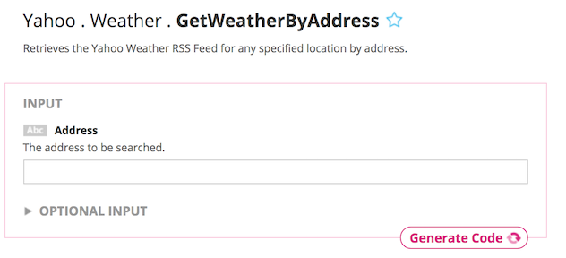
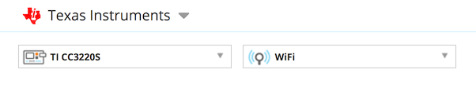
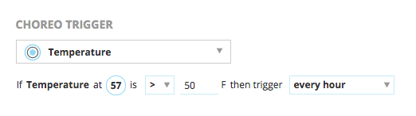
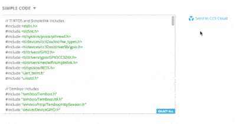
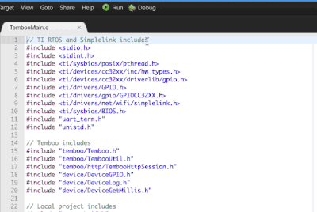

Introduction
With internet-connected embedded devices, embedded developers have the ability to tap into a massive offering of REST-ful APIs that are exposed by websites & services.
- Does your embedded application need to know the local weather? Use the "get weather" API from yahoo.com. THIS IS WHAT WE'LL BE DOING IN THIS TRAINING!
- Do you need to send an SMS/text message when a sensor value exceeds a threshold? Use the APIs provided by Twilio.
- Want to datalog your sensor values into a Google spreadsheet? Use Google's APIs for appending a row to a Google sheet.
To help developers quickly interface with various REST-enabled services & websites, Texas Instruments collaborated with Temboo. Temboo is an Internet of Things (IoT) partner who can generate application code based on the SimpleLink SDK that enables your internet-connected SimpleLink device to take advantage of hundreds of different REST APIs.
Temboo supports hundreds of web interfaces
Temboo enables developers to quickly generate SimpleLink SDK-based application code that allow your internet-connected SimpleLink device to interface with hundreds of web interfaces. Here is the list of the web services that your internet-connected SimpleLink device can interact with that Temboo can generate code for.
You'll see that Temboo supports familiar services from Yahoo, Google, Twilio, Nexmo, Wolfram Alpha & more. For a complete list, check out https://temboo.com/library/
Prerequisites
Software
- In this training, we will be using CCS Cloud (this requires a myTI login)
- We will need to create a Temboo account to leverage their service.
Hardware
- 1x CC3220S or CC3220SF LaunchPads (CC3220S-LAUNCHXL or CC3220SF-LAUNCHXL)
Task 1: Setup
Let's get everything configured & set up.
- We'll need to create a Temboo account. You can do so by navigating to www.temboo.com.
- Secondly, you'll need a myTI account if you don't already have one. This will allow us to use CCS Cloud to compile & program our SimpleLink device with the code that Temboo will generate for us.
- If you haven't already done so, we need to ensure that your CC3220S or CC3220SF LaunchPad is configured in "Developer mode." Some CC3220 LaunchPad kits are shipped in "Production" mode out of the box to showcase the device's security capabilities. Follow these instructions to get your device into "Developer mode" using our UniFlash/Image Creator utility.
At this point, you should have both a Temboo & myTI account. Your LaunchPad should now also be in "Developer" mode, which will allow us to program new firmware to the CC3220 device.
Task 2: Testing the "GetWeatherByAddress" REST API
Now that we have a Temboo account, go ahead and log into your account at www.temboo.com
- Once logged in, look for the "GetWeatherByAddress" choreo. You can find it at Yahoo > Weather > GetWeatherByAddress
- Depending on the REST-ful API you want to generate code for, Temboo will ask for a few parameters. The GetWeatherByAddress API only requires the address you want to know the weather for.
- Enter any address in the Address input field e.g., 12500 TI Blvd, Dallas, TX 75243.
- Click the "Run now" button. Doing so will test the inputs to the REST API & the response from the yahoo server will be displayed in the "Output" section below. The response from yahoo.com is in XML format, which can be parsed as needed for the data that we care about.
- In this case, the Temboo site ran the REST API to query the weather. Temboo can also generate code for your CC3220 device to run the same REST API request.
Note: Some services will require additional registration
Yahoo weather doesn't require any registration or authentication to leverage their service. Others might require registration to leverage their REST APIs. If so, Temboo will ask for login/authentication details to get access to a given service.
Task 3: Generating code for the CC3220 device
Now that we've confirmed that the REST API works & we are getting a response from the yahoo server, we will go ahead and let Temboo generate SimpleLink SDK-based code for the CC3220 to make the same REST API call.
- At the top of the page, we need to tell Temboo which device they should generate code for. Select Texas Instruments form the drop down, then select the device you are using (CC3220S or CC3220SF).
- Once your device is selected, we need to tell Temboo how your device is going to connect to the internet. Be sure to provide your network credentials (SSID, password, etc) here so Temboo can generate the appropriate code for your CC3220 device to connect to your network/internet.
- Temboo, among other things, will generate a file called 'TembooAccount.h' that will house your Temboo credentials, network credentials, etc.
Task 4: (Optional) Temboo can also include conditionals in the generated code
Do you only want to trigger the REST API call on a certain I/O event (i.e. only request weather from yahoo.com if a digital pin goes high, or analog input exceeds threshold)? Alternatively, do you want to trigger an actuator event based on the response from the server (i.e. toggle pin high or low if the response from the yahoo server is above/below a threshold)? These are both possible with Temboo. Temboo can generate the appropriate logic (if-statement) in your application code to take these conditions into account.
- Use the visual pin board to set up a sensor or actuator and the conditions option will appear. You can learn more about Temboo conditions here.
Task 5: Importing generated code to CCS Cloud
Scrolling down to the bottom of the page, you'll see that Temboo has generated code for your CC3220 device based on the parameters you provided above. At this point, we have the option to import this generated code directly into CCS Cloud, TI's browser-based IDE.

- Click the "Send to CCS Cloud" button to the right of your generated code.
- Name your application and click Send.
- Click the link that appears to visit the CCS Cloud IDE in your browser. CCS Cloud will generate a complete project based on the code Temboo just generated.
Task 6: Edit, Compile, Debug, Flash the generated code
- Now that the generated project is in CCS Cloud, you have the ability to run it as-is, or modify it for your specific use-case.
- To compile the project & flash your LaunchPad, be sure your LaunchPad is plugged into USB.
- Then, click the "Run" button. This will compile the project & flash the binary to your CC3220 device.
- You can also use the integrated terminal/serial monitor available in CCS Cloud to receive the serial UART messages coming from your LaunchPad.
- Click on 'Target > Select COM Port'
- In the dialog box, select the appropriate COM port & appropriate baud rate (Temboo-generated code defaults to 115200 baud).
- Click 'OK' - the serial monitor below should print out messages coming from your LaunchPad. In our case, we'll see the weather response that our LaunchPad recieved from Yahoo by way of Temboo (screenshot of terminal output below).
Challenge! Extend the application.
Temboo made it super easy to interface with various cloud/web services. Now that the generated code is in CCS Cloud, you can extend the application to add further capabilities. For example, you can make an intelligent thermostat or connected sprinkler zone controller that now has weather awareness thanks to cloud-connectivity.
Task 7: Try out the other services
Great! Now that you've successfully generated SimpleLink SDK-based code with Temboo to work with the Yahoo weather service, you can start exploring the other REST APIs Temboo has support for. Some ideas:
- Send an email with Gmail
- Send an SMS with Twilio
- Post a tweet on Twitter
- Query Wolfram Alpha
- Post a service ticket with Zendesk
Have fun using Temboo with the SimpleLink SDK!